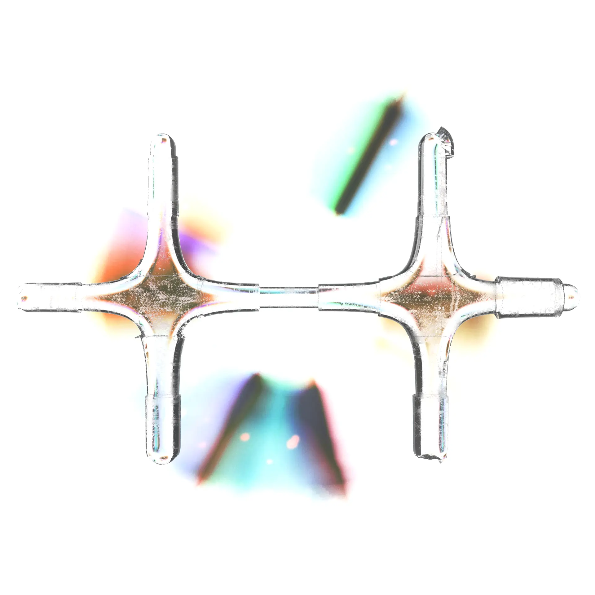

Listening Session
on Radio Hinter
Tracklist
- unreleased (2021)
- unreleased (2020)
- unreleased (2024)
- Luuk Age - 0y
- Lmo - Nee Nee
- Luuk Age - Server Thoughts and Desires
- unreleased (2025)
- Luuk Age - Auto (original mp3 export)
- unreleased (2024)
- Lmo - Oldhead
- Lmo - Explanation Explanation Explanation
- Bommel - Number µ ölÏ9 T Á
- unreleased (2020)
- Bommel - Korzelige Konijne
- Bommel - Randvoorwoorden
- unreleased (2023)
- Bommel - Longman (epic version)
- Luuk Age - Prophets
- Luuk Age - Dogtown
- Bommel - Brock
- Bommel & Kutters - Reused Urn Of The Akkoo
- unreleased (2024)
- Bommel & Kutters - The Messenger Took A Stone In His Hand And It Was As Small As Hummus
- Luuk Age - Glutter
Memory Forgetter
for Recovery Channel on Kiosk Radio

Tracklist
- Big Orb Energy
- Mass Comparison
- Horord Prog
- Moss P3
- Dogtown
- Yes (unreleased)
- 0y
- Glutter
- Fake Hand (edit)
- Average Past Reversing
- Auto
- Wind Dream With Giant
- Helldisc
- Server Thoughts and Desires
- Requiem for Audio Data Loss and Organ
Memory Forgetter
as Luuk Age
Ethereal sounds from damaged cd's and corrupt digital audio files.

Tracklist
- Big Orb Energy
- Mass Comparison
- Helldisc
- Moss P3
- Glutter
- Horord Prog
- Fake Hand
- 0y
- Wind Dream With Giant
- Dogtown
- Average Past Reversing
- Auto
- Server Thoughts and Desires
- Requiem for Audio Data Loss and Organ
Background
Back in 2021, I experimented with the sound of a glitching meditation cd. It turned into a lot more experiments with the manipulation of cd's and mp3's to create otherworldly sounds. The resulting album combines both meditative and jarring moments, like a computer’s intense dreams.
All music is composed, produced and mixed by Luuk van de Mosselaer. Huge thanks to Niels Adema, who played church organ on “Requiem for Audio Data Loss and Organ” in the Nicolaikerk in Utrecht. Artwork by Luuk van de Mosselaer.
Thanks to everyone who helped me think, gave feedback and listened to me ramble about a project that became a huge deal in my head.
released December 13, 2024